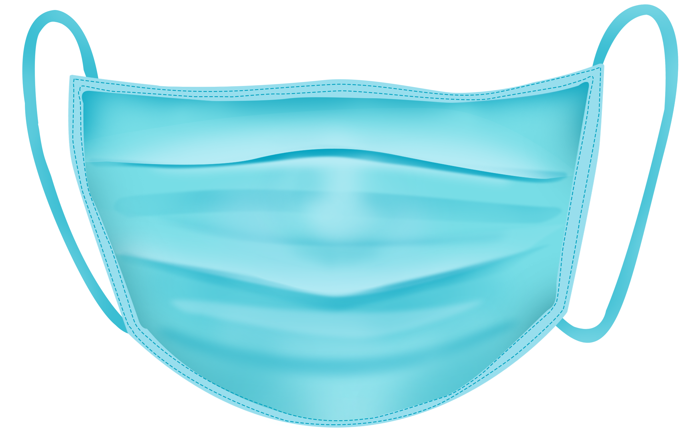

¿Qué es el Covid-19?
Los coronavirus son una familia de virus que causan enfermedades (desde el resfriado común hasta enfermedades
respiratorias más graves) y circulan entre humanos y animales.
En este caso, se trata del SARS-COV2. Apareció en China en diciembre pasado y provoca una enfermedad llamada COVID-19,
que se extendió por el mundo y fue declarada pandemia global por la Organización Mundial de la Salud.
La COVID-19 afecta de distintas maneras en función de cada persona. La mayoría de las personas que se
contagian presentan síntomas de intensidad leve o moderada, y se recuperan sin necesidad de hospitalización.
Los sintomas mas habituales son:
- fiebre
- Tos seca
- Cansancio
Cómo se propaga
El virus que causa la COVID‑19 se transmite principalmente a través de las gotículas generadas cuando una persona infectada tose, estornuda o espira. Estas gotículas son demasiado pesadas para permanecer suspendidas en el aire y caen rápidamente sobre el suelo o las superficies. Usted puede infectarse al inhalar el virus si está cerca de una persona con COVID‑19 o si, tras tocar una superficie contaminada, se toca los ojos, la nariz o la boca.
Otros sintomas menos comunes son los siguientes:- Molestias y dolores
- Dolor de garganta
- Diarrea
- Conjuntivitis
- Dolor de cabeza
- Perdida del sentido del olfato o del gusto
- Erupciones cutáneas o pérdida del color en los dedos de las manos o de los pies
Prevencion
Toma las precauciones adecuadas e infórmate bien para protegerte y cuidar de quienes te rodean. Sigue las recomendaciones de los organismos de salud pública de tu zona.Para evitar la propagación de la COVID-19:
- Lávate las manos con frecuencia. Usa agua y jabón o un desinfectante de manos a base de alcohol
- Mantén una distancia de seguridad con personas que tosan o estornuden.
- Utiliza mascarilla cuando no sea posible mantener el distanciamiento físico.
- No te toques los ojos, la nariz ni la boca.
- Cuando tosas o estornudes, cúbrete la nariz y la boca con el codo flexionado o con un pañuelo.
- Si no te encuentras bien, quédate en casa.
- En caso de que tengas fiebre, tos o dificultad para respirar, busca atención médica.
 Las mascarillas pueden ayudar a prevenir que las personas que las llevan propaguen el virus y lo contagien a otras personas. Sin embargo, no protegen frente a la COVID-19 por sí solas, sino que deben combinarse con el distanciamiento físico y la higiene de manos. Sigue las recomendaciones de los organismos de salud pública de tu zona.
Recomendaciones
Uso de gel antibacterial
Al entrar y salir de diversos establecimientos asegurate de echarte gel antibacterial.
Sigue las medidas preventivas
En todos los establecimientos de salud como las farmacias encoontraras informacion preventiva.
Recuerda desinfectar las zonas donde tocas
Lavate las manos frecuentemente y por lo menos 20 segundos y desinfecta cualquier superficie, asi como productos de la calle.